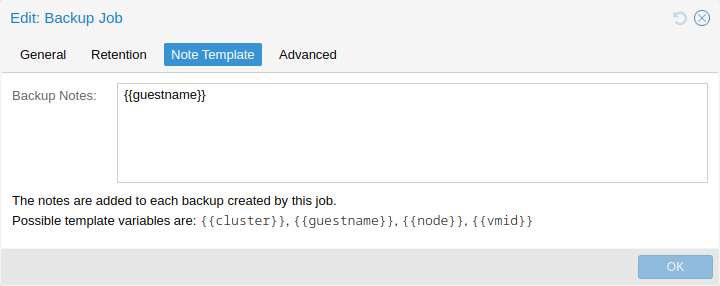

You can add notes to backups using the Edit Notes button in the UI or via the storage content API.

It is also possible to specify a template for generating notes dynamically for a backup job and for manual backup. The template string can contain variables, surrounded by two curly braces, which will be replaced by the corresponding value when the backup is executed.
Currently supported are:
{{cluster}} the cluster name, if any
{{guestname}} the virtual guest’s assigned name
{{node}} the host name of the node the backup is being created
{{vmid}} the numerical VMID of the guest
When specified via API or CLI, it needs to be a single line, where newline and
backslash need to be escaped as literal \n and \\ respectively.